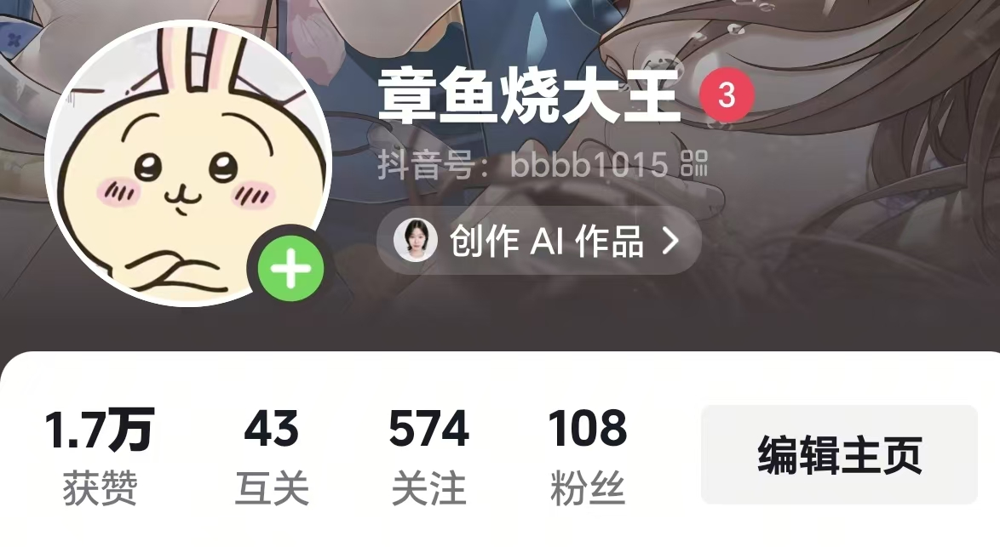

NO.03 / 2026
碎片时光
短视频内容创作实验
Short Video Content Experiment

Creative Log
01 / 项目背景
为什么开始这次创作实验？
出于对明星、影视、娱乐内容的兴趣，尝试运营个人短视频账号，将日常关注的内容转化为短视频作品。
在持续创作过程中，通过观察平台热点和用户反馈，探索内容选题、制作节奏和传播效果之间的关系。
02 / 内容方向
从兴趣出发的三类内容
明星相关内容
围绕关注的明星动态进行素材整理和内容剪辑。
影视娱乐内容
结合影视话题和用户兴趣，制作具有讨论价值的视频内容。
主播/热点切片内容
关注实时热点，将具有传播潜力的内容快速整理并制作。
03 / 我的实践过程
从热点到复盘的创作链路
热点捕捉
关注娱乐领域热点变化，判断具有传播潜力的话题。
素材整理
筛选素材，整理内容逻辑，确定视频表达方向。
快速制作
完成视频剪辑、节奏调整、字幕处理和发布。
数据复盘
根据播放量、点赞、评论等反馈，分析用户兴趣和内容表现。
05 / 项目成果
持续运营个人短视频账号，完成多类型娱乐内容创作。
通过热点捕捉、内容制作和数据观察，积累短视频选题、用户兴趣分析和平台传播经验。
06 / 项目反思
通过短视频创作实践，我逐渐认识到内容传播不仅依赖热点本身，也受到发布时间、用户情绪、内容节奏和表达方式影响。
持续测试和复盘，是提升内容质量的重要方式。